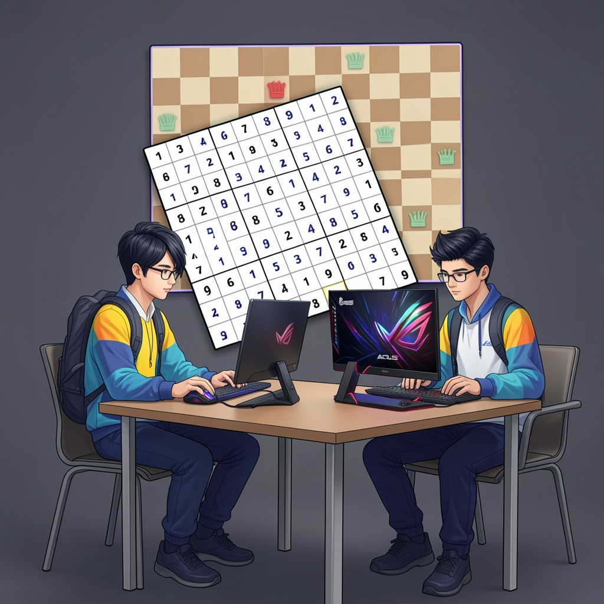

NQ
N-Queens workspace
Run Min-Conflict on boards of different sizes and replay the movement of each queen step by step.
ADOMC project evolution
Min-Conflit started as an interactive solver for N-Queens and Sudoku. It now also exists as a local-first Chromium extension, a hosted demo, and a portfolio-ready case study.

The platform visualizes local search and backtracking techniques for constraint satisfaction problems. The latest iteration packages the solver into a Manifest V3 extension while keeping a clean hosted demo path.
Run Min-Conflict on boards of different sizes and replay the movement of each queen step by step.
Compare Backtracking and Min-Conflict, use built-in difficulties, or enter a custom grid.
Measure solver speed and convergence locally to support demonstrations, reports, and coursework.
Inspect every move, conflict count, and final outcome through a visual replay timeline.
Chrome extension branch
The solver now ships as a Chromium extension designed around Manifest V3 constraints: bundled logic, minimal permissions, no remote hosted code, and a worker-driven UI.
Explore the migration from Flask app to extension product, including architecture and publishing goals.
Read the case studyThe extension workspace is also exposed as a hosted web demo, which makes it easier to present publicly.
Open hosted extension demoA dedicated privacy policy page is already available for the Chrome Web Store form.
Open privacy policy